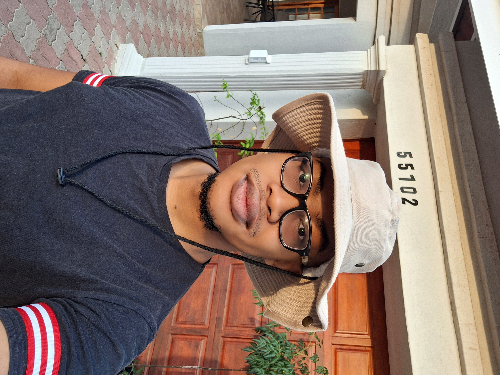

Growing up, my mother would always make me drink multiple scrotching cups of tea telling me I would get better. And everytime, without fail, I was all better the next day.
It is well known that tea has healing properties, and as a nurse, my mom knew all that heat would whip me back into shape. That is where my love for tea came from. It came from knowing I will always be alright as long as I have a cup.
Kozie Korner is a family business that I created for the purpose of spreading this wonderful beverage all over the country. We distribute all your favorite teas from all over the world and bring them to you.
Meet the Family
CEO
Thuto B.B. Mogorosi
Leader, Captian of the ship, creater of Kozie Korner.

CFO
Matlhogojane Mogorosi
Father of the CEO.
Treasurer
Tshiamo L. Mogorosi
Matriarch of the family and the company.
Mascot
Thulaganyo R.M. Mogorosi
Self-proclaimed "Most talented" in the family